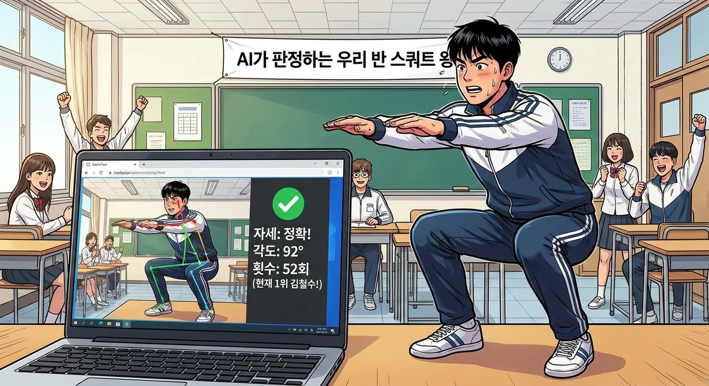
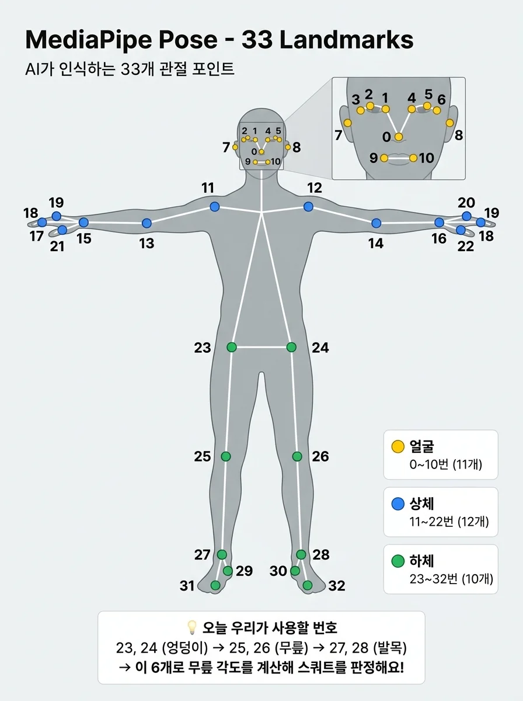
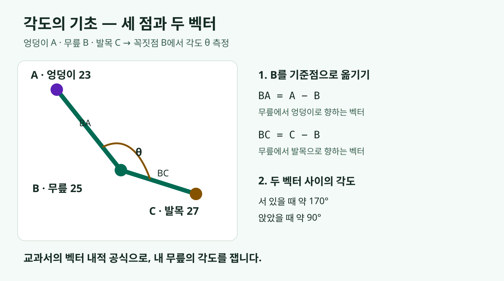
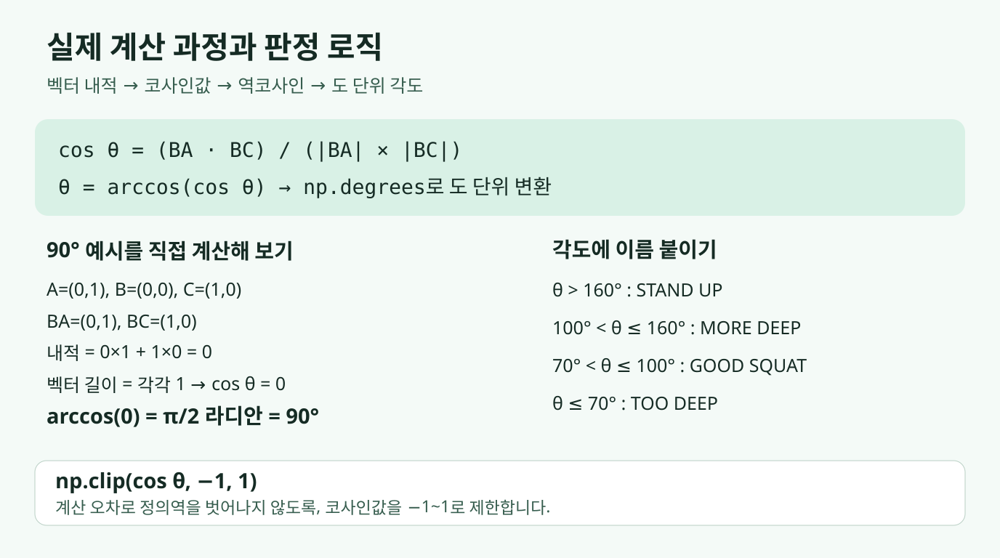
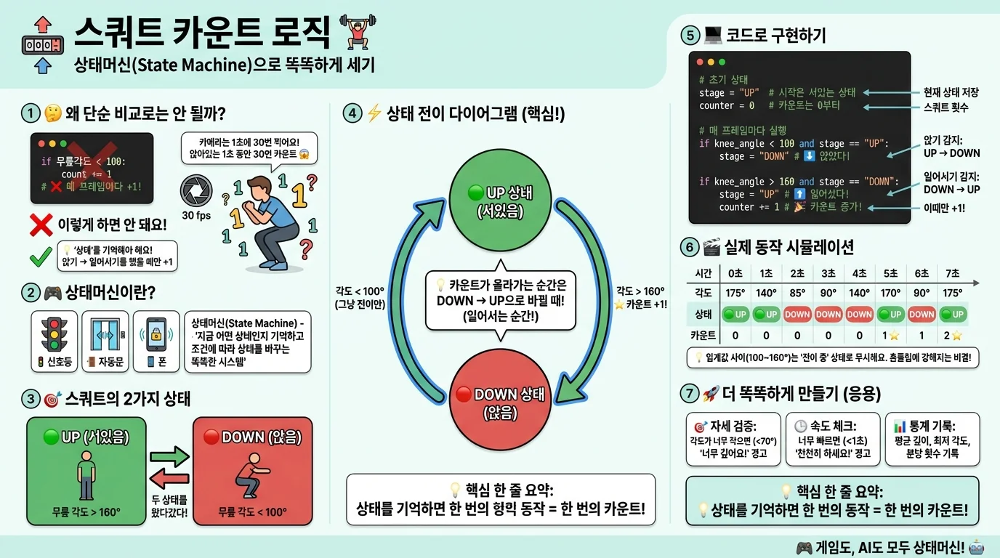

웹캠으로 내 자세를 분석하는 AI 만들기
웹캠에 비친 내 몸에서 관절의 위치를 찾아봅니다. 무릎이 얼마나 굽혀졌는지 숫자로 표시하는 프로그램을 직접 만듭니다.
MISSION
웹캠에 비친 내 몸에서 관절의 위치를 찾아봅니다. 무릎이 얼마나 굽혀졌는지 숫자로 표시하는 프로그램을 직접 만듭니다.
우리가 정한 각도 기준에 맞춰 앉았다 일어난 동작만 셉니다. 앉아 있는 동안 숫자가 계속 올라가지 않도록 한 번의 동작을 구분합니다.
완성한 프로그램으로 친구들의 스쿼트를 같은 기준에서 측정합니다. 정자세로 인정된 횟수를 비교하며 스쿼트 왕을 가려봅니다.
2시간 안에 우리도 만든다
LIVE DEMO

오늘 만들 프로그램은 웹캠 화면 속 내 몸 위에 관절을 연결한 뼈대를 그립니다. 무릎을 굽히면 화면에 표시된 각도가 실시간으로 바뀌고, 정자세로 앉았다 일어나면 스쿼트 횟수가 하나씩 올라갑니다. 사람이 옆에서 세어 주지 않아도 프로그램이 동작을 구분하는 모습을 확인해 보세요.
HOW IT WORKS
컴퓨터는 영상만 보고 바로 스쿼트 횟수를 아는 것이 아닙니다. 영상에서 관절을 찾고, 관절 위치를 각도로 바꾼 뒤, 우리가 정한 규칙으로 동작을 판단합니다.
1단계 →
웹캠이 보내는 화면을 한 장씩 읽어 내 움직임을 프로그램으로 가져옵니다.
2단계 →
MediaPipe가 어깨·엉덩이·무릎 등 몸의 주요 지점 33개가 어디에 있는지 찾아줍니다.
3단계 →
엉덩이, 무릎, 발목의 위치로 무릎이 굽혀진 각도를 계산합니다.
4단계
앉은 자세의 기준을 90도 이하로 잡고, 그 자세에서 다시 일어나는 한 동작을 1회로 셉니다.
LEARN
웹캠 화면을 띄우고 그 위에 글자와 도형을 그립니다. 각도와 횟수를 화면에 보여 주는 역할을 맡습니다.
사람 몸의 관절 33개 위치를 실시간으로 알려줍니다. 이미 학습된 모델을 사용하므로 우리가 AI를 처음부터 학습시킬 필요는 없습니다.
좌표 세 개를 각도로 바꾸는 계산을 돕습니다. 엉덩이·무릎·발목의 좌표를 이용해 자세를 숫자로 표현합니다.
지금 서 있는지, 앉아 있는지를 기억하는 방법입니다. 앉았다 일어난 한 번을 정확히 세고 같은 동작을 중복해서 세지 않게 합니다.
SETUP
Python 3.11과 웹캠을 준비하세요. 아래 명령은 Windows 기준입니다. 아래 세 파일을 같은 실습 폴더에 다운로드하고, 그 폴더에서 터미널을 실행합니다. 이후 각 단계의 파이썬 파일도 이 폴더에 저장하세요.
터미널에 아래 명령을 입력합니다. -r requirements.txt는 파일에 적힌 라이브러리와 버전을 한꺼번에 설치하라는 뜻입니다. 설치가 끝나고 다시 명령을 입력할 수 있는 상태가 될 때까지 기다리세요. 파일 상단의 원본 안내 주석에는 requirements_new.txt라는 옛 이름이 남아 있지만, 다운로드한 파일 이름인 requirements.txt로 실행합니다.
pip install -r requirements.txt다른 프로젝트의 라이브러리와 섞이지 않게 하려면 가상환경 사용을 권장합니다. 이 방법을 선택했다면 아래 세 줄을 순서대로 실행하세요. 첫 줄은 전용 환경을 만들고, 둘째 줄은 활성화하며, 마지막 줄은 그 환경 안에 라이브러리를 설치합니다.
python -m venv venv
venv\Scripts\activate
pip install -r requirements.txt위 활성화 명령은 Windows 명령 프롬프트(cmd) 기준입니다. 터미널이 PowerShell이라면 명령 프롬프트 프로필로 바꿔 실행하세요. 활성화되면 보통 명령줄 앞에 (venv)가 표시됩니다.
같은 터미널에서 확인 프로그램을 실행하세요. 가상환경을 선택했다면 활성화된 상태를 유지합니다.
python test_install.py아래는 실행 결과의 주요 항목만 추린 예시입니다. 각 항목에 OK가 표시되는지 확인하세요. Python의 마지막 버전 숫자와 웹캠 해상도는 사용하는 환경에 따라 달라질 수 있습니다.
[1/4] Python 버전: 3.11.4 OK
[2/4] OpenCV 버전: 4.10.0 OK
[3/4] MediaPipe 버전: 0.10.21 OK
[4/4] NumPy 버전: 1.26.4 OK
--------------------------------------------------
웹캠 연결 테스트 중...
웹캠 해상도: 1280 x 720 OKSTEP 1 · 20MIN
목표: 내 얼굴이 화면에 나오게 하는 것.
각 파일을 같은 폴더에 저장하고 터미널에서 python 01webcam_01.py처럼 실행하세요. 다음 파일을 실행하기 전에는 영상 창을 선택하고 q로 종료합니다. 아래 코드는 다운로드 파일 전체와 같으며, 강조된 줄은 이전 파일에서 추가되거나 바뀐 부분입니다. 첫 파일은 전체가 출발점입니다.
while True로 사진 한 장인 프레임을 초당 수십 장 계속 읽어야 움직이는 영상이 됩니다. success가 거짓이면 읽기에 실패한 것이므로 반복을 멈춥니다.
waitKey(1)은 키 입력을 확인하면서 창의 이벤트도 처리합니다. 이 예제에서 빼면 창이 제대로 뜨지 않거나 화면이 갱신되지 않을 수 있습니다. release()와 destroyAllWindows()는 카메라와 창을 정리합니다. 빠뜨리면 프로그램이 살아 있는 동안 카메라가 점유되어 다음 실행에서 잠긴 것처럼 보일 수 있습니다.
# 웹캠에서 영상 읽기(베이직)
import cv2
cap = cv2.VideoCapture(0) # 기본 카메라. 안 잡히면 1로 변경
while True:
success, frame = cap.read() # 한 프레임 읽기
if not success:
print("❌ 프레임 읽기 실패")
break
cv2.imshow("My Webcam", frame)
if cv2.waitKey(1) & 0xFF == ord('q'):
break
cap.release()
cv2.destroyAllWindows()
이번에는 cv2.flip(frame, 1) 한 줄로 좌우를 뒤집습니다. 거울처럼 보여서 내가 움직인 방향을 알아보기 쉬워집니다. 두 번째 인자 1은 좌우, 0은 상하 반전입니다.
# 웹캠에서 영상 읽기(좌우 반전)
import cv2
cap = cv2.VideoCapture(0) # 기본 카메라. 안 잡히면 1로 변경
while True:
success, frame = cap.read() # 한 프레임 읽기
if not success:
print("❌ 프레임 읽기 실패")
break
frame = cv2.flip(frame, 1) # 좌우 반전
cv2.imshow("My Webcam", frame)
if cv2.waitKey(1) & 0xFF == ord('q'):
break
cap.release()
cv2.destroyAllWindows()
putText로 제목과 종료 안내를 그립니다. 첫 인자 frame은 그릴 이미지, 다음 문자열은 표시할 내용입니다. (30, 60)은 왼쪽 위를 기준으로 글자 기준선이 시작할 위치이고, 폰트 종류 다음의 1.5는 글자 배율입니다. 마지막 두 인자는 색과 선 두께입니다.
이 원본 단계부터는 좌우 반전 줄이 빠져 있습니다. 다운로드 파일도 같은 구성이므로 화면 방향이 다시 바뀌는 것은 오류가 아닙니다. 거울 화면을 유지하고 싶다면 앞 단계의 반전 줄을 프레임을 읽은 직후에 추가해 보세요.
01webcam_03.py 다운로드# 메시지 추가
import cv2
cap = cv2.VideoCapture(0) # 기본 카메라. 안 잡히면 1로 변경
while True:
success, frame = cap.read() # 한 프레임 읽기
if not success:
print("❌ 프레임 읽기 실패")
break
# 제목 텍스트
cv2.putText(
frame, # 어디에 그릴지 (프레임)
"Hello, Camera!", # 출력할 문자열
(30, 60), # 위치 (x, y) — 왼쪽 상단 기준
cv2.FONT_HERSHEY_SIMPLEX, # 폰트 종류
1.5, # 폰트 크기
(0, 255, 0), # 색상 (B, G, R) — 초록색
3 # 글자 두께
)
# 안내 텍스트
cv2.putText(
frame,
"Press 'q' to quit",
(30, 110),
cv2.FONT_HERSHEY_SIMPLEX,
0.7,
(200, 200, 200), # 밝은 회색
2
)
cv2.imshow("My Webcam", frame) # 화면에 띄우기
if cv2.waitKey(1) & 0xFF == ord('q'):
break
cap.release()
cv2.destroyAllWindows()
rectangle의 두 좌표는 사각형의 왼쪽 위와 오른쪽 아래 꼭짓점입니다. 마지막 두께가 -1이면 내부를 채웁니다. 이 파일은 글자를 먼저 그리고 그 위를 초록 사각형으로 채우므로 앞서 그린 글자가 가려집니다.
코드가 실행됐는데 글자가 사라졌다면 그리는 순서를 살펴보세요. 사각형을 먼저 그린 뒤 글자를 쓰거나, 두께를 1 또는 2로 바꾸면 테두리만 그릴 수 있습니다.
# 도형 추가하기
# 메시지 추가
import cv2
cap = cv2.VideoCapture(0) # 기본 카메라. 안 잡히면 1로 변경
while True:
success, frame = cap.read() # 한 프레임 읽기
if not success:
print("❌ 프레임 읽기 실패")
break
# 제목 텍스트
cv2.putText(
frame, # 어디에 그릴지 (프레임)
"Hello, Camera!", # 출력할 문자열
(30, 60), # 위치 (x, y) — 왼쪽 상단 기준
cv2.FONT_HERSHEY_SIMPLEX, # 폰트 종류
1.5, # 폰트 크기
(0, 255, 0), # 색상 (B, G, R) — 초록색
3 # 글자 두께
)
# 안내 텍스트
cv2.putText(
frame,
"Press 'q' to quit",
(30, 110),
cv2.FONT_HERSHEY_SIMPLEX,
0.7,
(200, 200, 200), # 밝은 회색
2
)
# 사각형 그리기
cv2.rectangle(
frame, # 어디에 그릴지 (프레임)
(20, 25), # 왼쪽 상단 좌표 (x, y)
(420, 130), # 오른쪽 하단 좌표 (x, y)
(0, 255, 0), # 색상 (B, G, R) — 초록색
-1 # 선 두께
)
cv2.imshow("My Webcam", frame) # 화면에 띄우기
if cv2.waitKey(1) & 0xFF == ord('q'):
break
cap.release()
cv2.destroyAllWindows()
OpenCV의 기본 putText는 한글을 지원하지 않아 물음표로 보일 수 있습니다. Pillow(PIL)로 한글을 그리는 put_korean_text를 사용하고, 중복 정의 없이 같은 폴더의 korean_text.py에서 가져옵니다. Windows에서는 맑은 고딕 글꼴을 사용합니다.
이 단계는 사각형을 먼저 테두리로 그리고 한글을 나중에 넣습니다. 헬퍼는 한글이 그려진 새 이미지를 반환하므로 반드시 frame = put_korean_text(...)로 받아야 합니다. 반환값을 받지 않으면 원래 프레임에 한글이 보이지 않습니다.
# 한글로 메시지 출력하기
import cv2
from korean_text import put_korean_text
cap = cv2.VideoCapture(0) # 기본 카메라. 안 잡히면 1로 변경
while True:
success, frame = cap.read() # 한 프레임 읽기
if not success:
print("❌ 프레임 읽기 실패")
break
# 사각형 그리기
cv2.rectangle(frame, (20, 25), (420, 130), (0, 255, 0), 1)
# 제목 텍스트
frame = put_korean_text(frame, "안녕하세요, 카메라!", (30, 40), font_size=40, color=(0, 255, 0))
# 안내 텍스트
frame = put_korean_text(frame, "종료하려면 'q'를 누르세요", (30, 90), font_size=20, color=(200, 200, 200))
cv2.imshow("My Webcam", frame) # 화면에 띄우기
if cv2.waitKey(1) & 0xFF == ord('q'):
break
cap.release()
cv2.destroyAllWindows()
함수 참고: OpenCV 창 표시·키 입력 문서.
CONCEPT
방금 쓴 OpenCV는 컴퓨터에게 눈을 달아주는 영상 처리 라이브러리입니다. 카메라 영상을 읽고 분석하는 도구라 자율주행과 의료 영상 분야에도 쓰입니다.
웹캠을 열고 영상을 읽을 준비를 합니다. 이어서 read로 한 프레임씩 가져왔습니다.
읽거나 수정한 프레임을 창에 보여줍니다. 글자와 도형을 그린 결과도 여기서 확인했습니다.
키 입력을 기다리며 창의 이벤트를 처리합니다. q를 눌렀는지 확인하는 데 사용했습니다.
STEP 2 · 25MIN
목표: 내 몸에 뼈대가 그려지게 하는 것.
불러오기 → 모델 준비 → 영상 분석 → 결과 꺼내기의 네 단계입니다. 아래는 흐름만 보여 주는 개념 예시이며, 단독 실행하는 파일은 아닙니다. image에는 RGB 영상을 넣어야 합니다. 실제 파일은 mp_pose라는 별칭과 rgb라는 변수명을 사용합니다.
import mediapipe as mp
pose = mp.solutions.pose.Pose()
results = pose.process(image)
landmarks = results.pose_landmarks아래 파일을 저장하고 python 02mediapipe_01.py로 실행하세요. OpenCV 영상은 BGR 순서지만 MediaPipe 입력은 RGB 순서라 cvtColor로 바꿔서 분석합니다. 사람이 없거나 인식에 실패하면 pose_landmarks가 None일 수 있어, if로 확인한 뒤에만 뼈대를 그립니다.
# mediapipe 사용하여 웹캠에 표현하기
import mediapipe as mp
import cv2
mp_pose = mp.solutions.pose
mp_draw = mp.solutions.drawing_utils
pose = mp_pose.Pose()
cap = cv2.VideoCapture(0) # 기본 카메라. 안 잡히면 1로 변경
while True:
success, frame = cap.read() # 한 프레임 읽기
if not success:
print("❌ 프레임 읽기 실패")
break
frame = cv2.flip(frame, 1) # 1: 좌우반전, 0: 상하반전
rgb = cv2.cvtColor(frame, cv2.COLOR_BGR2RGB)
results = pose.process(rgb)
if results.pose_landmarks:
mp_draw.draw_landmarks(
frame,
results.pose_landmarks,
mp_pose.POSE_CONNECTIONS)
cv2.imshow("My Webcam", frame)
if cv2.waitKey(1) & 0xFF == ord('q'):
break
cap.release()
cv2.destroyAllWindows()
다음 파일은 점과 선을 꾸미고 무릎 위치를 표시합니다. 코드를 두 덩어리로 나눠 읽되, 실행할 때는 다운로드한 파일 전체를 사용하세요. 한글 헬퍼도 같은 폴더에 있어야 합니다.
02mediapipe_02.py 다운로드mp_pose는 자세 인식, mp_draw는 그리기 기능의 별칭입니다. 두 DrawingSpec으로 관절 점과 연결선의 색·두께를 따로 정하고, circle_radius로 점 크기를 바꿉니다.
from korean_text import put_korean_text
import cv2
import mediapipe as mp
# Mediapipe 초기화
mp_pose = mp.solutions.pose
mp_draw = mp.solutions.drawing_utils
pose = mp_pose.Pose()
# 관절 포인트 스타일(초록색 점)
landmark_style = mp_draw.DrawingSpec(color=(0, 255, 0), # 초록색
thickness=5, # 점 테두리 두께
circle_radius=5 # 점 크기
)
# 관절 연결선 스타일(노란색 선)
connection_style = mp_draw.DrawingSpec(color=(0, 255, 255), # 노란색
thickness=2 # 선 두께
)
cap = cv2.VideoCapture(0) # 기본 카메라. 안 잡히면 1로 변경with에서 만든 Pose는 블록을 나갈 때 자동 정리됩니다. 카메라와 창은 별개라 마지막의 release와 destroyAllWindows도 필요합니다. 원본에는 with 앞에도 Pose를 한 번 만드는 줄이 남아 있지만, 반복문은 with에서 새로 만든 객체를 사용합니다.
# 동작 조건 설정
with mp_pose.Pose(
min_detection_confidence=0.7, # 관절 감지 신뢰도 임계값 : 70% 이상 확신할 때만 감지
min_tracking_confidence=0.7 # 관절 추적 신뢰도 임계값 : 높을 수록 정확하지만 끊김이 생길 수 있음
) as pose:
while True:
success, frame = cap.read()
if not success:
break
frame = cv2.flip(frame, 1) # 좌우 반전
rgb = cv2.cvtColor(frame, cv2.COLOR_BGR2RGB)
# ──────────────────────────────────────────────
# AI 포즈 분석 실행
# ──────────────────────────────────────────────
# pose.process(rgb) 한 줄이면 AI가 33개 관절을 찾아줌!
# results.pose_landmarks 에 결과가 담김
# → 사람이 없으면 None
# → 사람이 있으면 33개 관절의 좌표 데이터
results = pose.process(rgb)
# ──────────────────────────────────────────────
# 관절이 감지되면 처리
# ──────────────────────────────────────────────
if results.pose_landmarks:
mp_draw.draw_landmarks( # 관절 감지 결과를 화면에 그리기
frame, # 어디에 그릴지
results.pose_landmarks, # 감지된 관절 데이터
mp_pose.POSE_CONNECTIONS, # 관절 연결 정보
landmark_style, # 관절 포인트 스타일 적용
connection_style # 관절 연결선 스타일 적용
)
# ──────────────────────────────────────────────
# 특정 관절 좌표 추출하기
# ──────────────────────────────────────────────
landmarks = results.pose_landmarks.landmark
# 왼쪽 무릎 좌표 가져오기 (번호: 25)
# ⚠️ 좌표값은 0.0 ~ 1.0 사이의 "비율"
# → 실제 픽셀 위치로 변환하려면
# x * 화면너비, y * 화면높이 를 곱해야 함
knee = landmarks[mp_pose.PoseLandmark.LEFT_KNEE]
# 화면 크기 가져오기
h, w, _ = frame.shape # 화면 높이, 너비, 채널수
# 비율 -> 픽셀 좌표 변환
knee_x = int(knee.x * w)
knee_y = int(knee.y * h)
# 무릎 좌표에 빨간색 원 그리기
cv2.circle(frame, (knee_x, knee_y), 10, (0, 0, 255), -1)
# 무릎 좌표 텍스트로 표시하기
frame = put_korean_text(frame,
f"무릎 좌표: ({knee_x}, {knee_y})",
(knee_x + 20, knee_y),
font_size=24,
color=(0, 0, 255)
)
else:
# 사람이 감지되지 않으면
frame = put_korean_text(frame,
"사람 감지 실패",
(30, 50),
font_size=24,
color=(0, 0, 255)
)
cv2.imshow("My Webcam", frame)
if cv2.waitKey(1) & 0xFF == ord('q'):
break
cap.release()
cv2.destroyAllWindows()
knee.x와 knee.y는 화면의 가로·세로를 0~1로 나타낸 비율입니다. 예를 들어 너비 1280에서 x가 0.5라면 640픽셀 위치입니다. 그래서 knee_x = int(knee.x * w)처럼 너비를 곱하고 정수로 바꿉니다. 세로 위치에는 높이 h를 곱합니다.
min_detection_confidence는 처음 사람을 찾을 때, min_tracking_confidence는 관절을 계속 추적할 때 결과를 받아들이는 최소 신뢰도입니다. 0.7은 더 확실한 결과를 요구하는 설정입니다. 높이면 판정이 엄격해지지만 인식이 끊기거나 다시 찾는 시간이 늘 수 있으며, 정확도가 무조건 높아지는 것은 아닙니다.
좌표와 신뢰도 참고: MediaPipe Pose 문서.
LANDMARKS

랜드마크는 몸에서 찾은 주요 지점입니다. 번호는 0부터 시작해 32까지이며, 얼굴·상체·하체로 나누어 보면 필요한 위치를 쉽게 찾을 수 있습니다.
| 번호 | 그룹 | 개수 |
|---|---|---|
| 0~10 | 얼굴 | 11개 |
| 11~22 | 상체 | 12개 |
| 23~32 | 하체 | 10개 |
번호 대신 의미가 드러나는 이름을 써도 됩니다. 아래는 실습 파일의 무릎 추출 줄 그대로입니다. mp_pose.PoseLandmark.LEFT_KNEE는 25이므로 landmarks[25]와 같은 지점을 가리킵니다.
knee = landmarks[mp_pose.PoseLandmark.LEFT_KNEE]이제 엉덩이–무릎–발목 세 점을 고를 수 있습니다. 다음 섹션에서는 이 세 점으로 무릎의 각도를 구해 얼마나 굽혔는지 숫자로 표현합니다.
STEP 3 · 20MIN
앞에서 찾은 왼쪽 엉덩이 23, 무릎 25, 발목 27을 떠올려 보세요. 세 점의 위치를 무릎 각도라는 숫자 하나로 바꾸면 얼마나 굽혔는지 비교할 수 있습니다. 예를 들어 서 있을 때 약 170도, 앉았을 때 약 90도라면 이 변화를 이용해 스쿼트를 셀 수 있습니다. 실제 측정값은 자세와 카메라 방향에 따라 달라집니다.
A는 엉덩이, B는 무릎, C는 발목입니다. 각도를 재는 꼭짓점 B를 기준으로 두 벡터를 만들면, 고등학교 기하에서 배우는 벡터 내적 공식을 그대로 적용할 수 있습니다.


예를 들어 A=(0,1), B=(0,0), C=(1,0)이면 BA=(0,1), BC=(1,0)입니다. 내적은 0이고 두 벡터의 길이는 각각 1이므로 cos θ=0, θ=90도입니다. 교과서 속 식이 웹캠에서 찾은 내 무릎의 각도를 재는 도구가 된 것입니다.
03angle_01.py 다운로드# 두 직선이 이루는 각 구하는 함수
import numpy as np
def calculate_angle(a, b, c):
"""
세 관절의 (x, y) 좌표를 받아 꼭짓점 b의 각도를 반환합니다.
수학 원리:
1) 벡터 BA = A - B (꼭짓점 → A 방향)
2) 벡터 BC = C - B (꼭짓점 → C 방향)
3) cos θ = (BA · BC) / (|BA| × |BC|) ← 벡터 내적 공식
4) θ = arccos(cos θ) ← 각도로 변환
매개변수:
a: 시작점 좌표 [x, y] (예: 엉덩이)
b: 꼭짓점 좌표 [x, y] (예: 무릎) ← 이 각도를 구함!
c: 끝점 좌표 [x, y] (예: 발목)
반환값:
각도 (도, 0~180)
"""
# 리스트 → NumPy 배열 변환 (벡터 연산을 위해)
a = np.array(a)
b = np.array(b)
c = np.array(c)
# 1단계: 벡터 계산
# 꼭짓점 b에서 a 방향, c 방향 벡터
ba = a - b # 무릎 → 엉덩이 방향
bc = c - b # 무릎 → 발목 방향
# 2단계: 내적(dot product) 계산
# ba · bc = ba[0]*bc[0] + ba[1]*bc[1]
dot_product = np.dot(ba, bc)
# 3단계: 벡터 크기(norm) 계산
# |ba| = sqrt(ba[0]² + ba[1]²)
magnitude_ba = np.linalg.norm(ba)
magnitude_bc = np.linalg.norm(bc)
# 4단계: cos θ 계산
cosine_angle = dot_product / (magnitude_ba * magnitude_bc)
# 5단계: 안전 장치 — 부동소수점 오차로 -1 ~ 1 범위를 벗어날 수 있음
# np.clip()으로 범위 제한
# np.clip(값, 최소값, 최대값)
# 즉, 최소보다 작으면 최소로, 최대보다 크면 최대로 조정
cosine_angle = np.clip(cosine_angle, -1.0, 1.0)
# 6단계: 라디안 → 도(degree) 변환
angle = np.degrees(np.arccos(cosine_angle))
return angle
파일의 상세 주석은 계산을 여섯 단계로 나눕니다. 먼저 NumPy 배열로 준비한 뒤 ① 두 벡터를 만들고, ② 내적을 구하고, ③ 각 벡터의 길이를 구합니다. 이어서 ④ 코사인값을 계산하고, ⑤ 범위를 제한하고, ⑥ 역코사인과 도 단위 변환을 거칩니다. np.dot은 내적, np.linalg.norm은 길이, np.degrees는 라디안을 도로 바꾸는 함수입니다.
각도를 구했으니 이제 judge_squat로 문구와 색상을 정합니다. 아래 표는 실제 코드의 부등호를 기준으로 경계를 정확히 나눈 것입니다.
def judge_squat(angle):
if angle > 160:
return "STAND UP", (200, 200, 200) # 회색
elif angle > 100:
return "MORE DEEP", (0, 200, 255) # 노란색
elif angle > 70:
return "GOOD SQUAT", (0, 255, 0) # 초록색
else:
return "TOO DEEP", (0, 128, 255) # 주황색
| 각도 | 판정 | 색상 | 의미 |
|---|---|---|---|
| 160도 초과 | STAND UP | 회색 | 서 있음 |
| 100도 초과~160도 이하 | MORE DEEP | 노란색 | 더 앉아야 함 |
| 70도 초과~100도 이하 | GOOD SQUAT | 초록색 | 정자세 |
| 70도 이하 | TOO DEEP | 주황색 | 너무 깊음 |
if / elif는 위에서부터 검사하고 처음 맞는 구간에서 끝납니다. 170도는 첫 조건에서 이미 걸러지므로 다음 조건의 “100도 초과”는 사실상 100도 초과~160도 이하가 됩니다. 만약 70도 초과 조건을 맨 앞으로 옮기면 170도도 정자세로 잘못 분류합니다. 조건의 순서가 판정의 일부인 이유입니다.
각도가 작을 때마다 더하면 될까요? 다음은 일부러 잘못 만든 비교용 코드입니다.
if angle < 100:
count = count + 1 # 이렇게 하면 안 된다초당 30프레임으로 읽는 웹캠에서는 1초 동안 앉아 있으면 같은 조건을 약 30번 검사합니다. 한 번 앉았는데 30회가 됩니다. 횟수를 세려면 지금 자세뿐 아니라 이전 상태도 기억해야 합니다.

위 그림은 상태 전이의 개요를 보여 주는 기존 자료로, DOWN 진입 조건이 100도 미만으로 표시되어 있습니다. 아래 실제 코드에서는 이를 70 < angle <= 100으로 보완했습니다. 그림의 흐름을 읽되 정자세 인정 범위는 수정된 코드를 기준으로 보세요.
상태는 UP(서 있음)과 DOWN(앉음) 두 가지입니다. 실제 파일은 소문자 "up"과 "down"을 사용합니다. GOOD SQUAT 구간인 70도 초과~100도 이하를 관측했을 때만 DOWN으로 전환합니다. 정확히 100도도 포함됩니다. DOWN 상태에서 160도를 넘으면 UP으로 바꾸며 1을 더합니다. 그 사이에 70도 이하로 더 내려가거나 100도 초과~160도 이하를 지나도 이전 상태를 유지합니다.
# 카운트 로직
# 정자세 구간을 관측했을 때만 DOWN 진입
if 70 < angle <= 100:
state = "down" # 이후 더 깊게 앉아도 DOWN 유지
# 올라오는 동작 감지
if angle > 160 and state == "down":
state = "up"
count += 1
print(f"✅ 카운트: {count}회")예를 들어 170 → 90 → 85 → 140 → 170도로 움직이면 UP → DOWN → DOWN → DOWN → UP이 됩니다. 마지막에 올라오는 순간에만 1회가 기록됩니다. 앉아 있는 프레임이 아무리 많아도 DOWN 상태를 반복해서 저장할 뿐 횟수는 늘지 않습니다.
신호등은 현재 불빛과 시간이 지났는지를 보고 다음 상태로 바뀌고, 자동문은 닫힘·열림 상태에 따라 다르게 움직입니다. 게임 캐릭터의 대기·이동·공격이나 AI 에이전트의 행동 제어에서도 이런 상태머신을 활용합니다.
final.py는 256줄, 크게 다섯 덩어리입니다. 각도 계산 → 자세 판정 → UI(두 함수) → 메인 루프 → 종료 출력에 오늘 배운 것이 연결됩니다.
| 코드의 위치 | 하는 일 | 오늘 배운 내용 |
|---|---|---|
calculate_angle() | 세 좌표로 무릎 각도 계산 | STEP 3 · 벡터 내적 |
judge_squat() | 각도로 자세 4단계 판정 | STEP 3 · 조건문 |
draw_panel() | 반투명 정보 패널 그리기 | STEP 1 · OpenCV 도형 응용 |
draw_angle_bar() | 각도를 막대 높이와 색으로 변환 | STEP 3 · np.interp 범위 변환 |
| 메인 루프 | 웹캠 읽기 → 인식 → 판정 → 카운트 → 표시 | STEP 1·2·3 연결 |
| 종료 출력 | 총 횟수와 분당 페이스 기록 | STEP 1 · 종료 처리 + STEP 3 · 카운트 응용 |
발표에서는 수학·상태머신·반복 흐름만 짚습니다. 나머지는 전체 파일을 받아 직접 실행하고, 아래 읽기용 코드에서 확인하세요.
final.py 전체 다운로드 · 직접 실행하기아래는 final.py 전체입니다. 앞에서 만든 각도 계산·판정과 화면 표시가 한 파일에 연결되어 있습니다. 같은 폴더에 korean_text.py를 두고, 설치를 마친 터미널에서 python final.py로 실행하세요. 영상 창에서 q를 누르면 종료됩니다.
세 좌표로 각도를 구하고, judge_squat가 반환한 문구와 색을 화면에 전달합니다.
draw_panel은 원본 화면과 검정 사각형을 섞어 반투명 패널을 만듭니다. draw_angle_bar는 각도를 막대 높이와 색으로 표현합니다.
프레임 읽기 → 관절 찾기 → 좌표 추출 → 각도 계산 → 상태 변경 → 화면 그리기를 반복합니다.
3·5·10·15·20회에 축하 문구를 띄웁니다. 종료 후에는 총 횟수, 운동 시간, 분당 페이스를 출력합니다.
np.interp는 70~170도 범위를 막대의 위·아래 위치나 0~255 색상값 범위로 옮깁니다. 중간인 120도는 양 끝의 중간 위치로 대응됩니다. 한 범위의 수를 다른 범위로 비례해서 옮기는 것도 수학입니다. 이 코드에서는 70도 쪽이 초록, 170도 쪽이 빨강이며, 화면 좌표는 아래로 갈수록 커진다는 점도 함께 보세요.
import cv2
import mediapipe as mp
from korean_text import put_korean_text
import time
import numpy as np
# 각도 계산 함수
def calculate_angle(a, b, c):
a = np.array(a)
b = np.array(b)
c = np.array(c)
ba = a - b # 무릎 → 엉덩이 방향
bc = c - b # 무릎 → 발목 방향
dot_product = np.dot(ba, bc)
magnitude_ba = np.linalg.norm(ba)
magnitude_bc = np.linalg.norm(bc)
cosine_angle = dot_product / (magnitude_ba * magnitude_bc)
cosine_angle = np.clip(cosine_angle, -1.0, 1.0)
angle = np.degrees(np.arccos(cosine_angle))
return angle
# 스쿼트 자세 판정 함수
def judge_squat(angle):
if angle > 160:
return "STAND UP", (200, 200, 200) # 회색
elif angle > 100:
return "MORE DEEP", (0, 200, 255) # 노란색
elif angle > 70:
return "GOOD SQUAT", (0, 255, 0) # 초록색
else:
return "TOO DEEP", (0, 128, 255) # 주황색
def get_coord(landmark):
"""랜드마크 → [x, y] 리스트"""
return [landmark.x, landmark.y]
# ══════════════════════════════════════════════════════
# UI 그리기 함수들
# ══════════════════════════════════════════════════════
def draw_panel(frame, x, y, w, h, alpha=0.55):
"""반투명 검정 패널 그리기"""
overlay = frame.copy()
cv2.rectangle(overlay, (x, y), (x + w, y + h), (0, 0, 0), -1)
cv2.addWeighted(overlay, alpha, frame, 1 - alpha, 0, frame)
def draw_angle_bar(frame, angle, x, bar_top, bar_bottom):
"""
화면 오른쪽에 각도 진행 바 그리기
각도가 낮을수록(깊이 앉을수록) 바가 올라감
"""
# 각도 → 바 높이 매핑 (70도=바 꽉참, 170도=바 비어있음)
bar_height = int(np.interp(angle, [70, 170], [bar_top, bar_bottom]))
# 각도에 따라 색상 변경 (초록 ↔ 빨강)
green = int(np.interp(angle, [70, 170], [255, 0]))
red = int(np.interp(angle, [70, 170], [0, 255]))
bar_color = (0, green, red)
# 배경 바 (어두운 회색)
cv2.rectangle(frame, (x, bar_top), (x + 40, bar_bottom), (50, 50, 50), -1)
# 진행 바 (각도에 따라 색상 변화)
cv2.rectangle(frame, (x, bar_height), (x + 40, bar_bottom), bar_color, -1)
# 테두리
cv2.rectangle(frame, (x, bar_top), (x + 40, bar_bottom), (200, 200, 200), 2)
# 각도 텍스트
cv2.putText(frame, f"{int(angle)}",
(x - 5, bar_top - 10),
cv2.FONT_HERSHEY_SIMPLEX, 0.6, bar_color, 2)
# 초기화
mp_pose = mp.solutions.pose
mp_draw = mp.solutions.drawing_utils
# 카운터의 핵심 알고리즘
count = 0
state = "up"
# 특정 횟수 달성 시 축하
milestones = {
3: "NICE START!",
5: "GREAT JOB!",
10: "AMAZING!!",
15: "INCREDIBLE!!!",
20: "SQUAT KING!!"
}
milestone_msg = ""
milestone_timer = 0
# 시간 측정
start_time = time.time()
# 웹캠 열기
cap = cv2.VideoCapture(0) # 기본 카메라. 안 잡히면 1로 변경
print("=" * 50)
print("🏋️ AI 스쿼트 카운터 — 시작!")
print("=" * 50)
print("카메라 앞에서 스쿼트를 해보세요.")
print("GOOD SQUAT! 판정이 나와야 카운트됩니다.")
print("'q' 키를 누르면 종료됩니다.")
print()
with mp_pose.Pose(min_detection_confidence=0.5, min_tracking_confidence=0.5) as pose:
while True:
success, frame = cap.read()
if not success:
break
# 프레임 전처리
frame = cv2.flip(frame, 1) # 좌우 반전
h, w, _ = frame.shape
# Mediapipe로 자세 추정
img_rgb = cv2.cvtColor(frame, cv2.COLOR_BGR2RGB)
results = pose.process(img_rgb)
# 기본값
angle = 180
status = "STAND UP"
color = (200, 200, 200) # 회색
if results.pose_landmarks:
mp_draw.draw_landmarks(frame, results.pose_landmarks, mp_pose.POSE_CONNECTIONS)
# 랜드마크 좌표 추출
landmarks = results.pose_landmarks.landmark
hip = get_coord(landmarks[mp_pose.PoseLandmark.LEFT_HIP])
knee = get_coord(landmarks[mp_pose.PoseLandmark.LEFT_KNEE])
ankle = get_coord(landmarks[mp_pose.PoseLandmark.LEFT_ANKLE])
# 각도 계산
angle = calculate_angle(hip, knee, ankle)
# 자세 판정
feedback, color = judge_squat(angle)
status = feedback
# 카운트 로직
# 정자세 구간을 관측했을 때만 DOWN 진입
if 70 < angle <= 100:
state = "down" # 이후 더 깊게 앉아도 DOWN 유지
# 올라오는 동작 감지
if angle > 160 and state == "down":
state = "up"
count += 1
print(f"✅ 카운트: {count}회")
# 이정표 달성 확인
if count in milestones:
milestone_msg = milestones[count]
milestone_timer = 40 # 약 40프레임. 1.3초 정
print(f"🎉 {milestone_msg}")
# ── 무릎 옆에 각도 표시 ─────────────────
knee_x = int(landmarks[mp_pose.PoseLandmark.LEFT_KNEE].x * w)
knee_y = int(landmarks[mp_pose.PoseLandmark.LEFT_KNEE].y * h)
cv2.circle(frame, (knee_x, knee_y), 18, color, 3)
cv2.putText(frame, f"{int(angle)}",
(knee_x - 30, knee_y - 25),
cv2.FONT_HERSHEY_SIMPLEX, 0.8, (255, 255, 0), 2)
# 화면에 피드백 표시
frame = put_korean_text(frame, feedback, (30, 50), font_size=40, color=color)
# ══════════════════════════════════════════════
# UI 렌더링
# ══════════════════════════════════════════════
# ── 왼쪽 상단 정보 패널 ─────────────────────
draw_panel(frame, 15, 15, 310, 200)
# 타이틀
cv2.putText(frame, "SQUAT COUNTER",
(25, 50), cv2.FONT_HERSHEY_SIMPLEX, 0.8, (255, 255, 255), 2)
# 카운트 (크게!)
cv2.putText(frame, f"COUNT : {count}",
(25, 100), cv2.FONT_HERSHEY_SIMPLEX, 1.3, (0, 255, 100), 3)
# 상태 (UP / DOWN)
stage_color = (0, 200, 255) if state == "down" else (255, 200, 0)
cv2.putText(frame, f"STAGE : {state.upper()}",
(25, 145), cv2.FONT_HERSHEY_SIMPLEX, 0.8, stage_color, 2)
# 각도
cv2.putText(frame, f"ANGLE : {int(angle)}",
(25, 180), cv2.FONT_HERSHEY_SIMPLEX, 0.7, (200, 200, 200), 2)
# 경과 시간 & 페이스
elapsed = int(time.time() - start_time)
minutes = elapsed // 60
seconds = elapsed % 60
pace = count / max(elapsed, 1) * 60 # 분당 횟수
cv2.putText(frame, f"TIME: {minutes:02d}:{seconds:02d} PACE: {pace:.1f}/min",
(25, 205), cv2.FONT_HERSHEY_SIMPLEX, 0.5, (150, 150, 150), 1)
# ── 자세 판정 텍스트 (큰 글씨) ──────────────
cv2.putText(frame, status,
(25, 270), cv2.FONT_HERSHEY_SIMPLEX, 1.3, color, 3)
# ── 오른쪽 각도 바 ──────────────────────────
draw_angle_bar(frame, angle, w - 60, 60, 400)
# ── 이정표 축하 메시지 ──────────────────────
if milestone_timer > 0:
# 화면 중앙에 큰 글씨로 표시
text_size = cv2.getTextSize(
milestone_msg, cv2.FONT_HERSHEY_SIMPLEX, 2.0, 4
)[0]
text_x = (w - text_size[0]) // 2
text_y = h // 2
# 글자 뒤에 반투명 배경
draw_panel(frame, text_x - 20, text_y - 50, text_size[0] + 40, 80)
cv2.putText(frame, milestone_msg,
(text_x, text_y),
cv2.FONT_HERSHEY_SIMPLEX, 2.0, (0, 255, 255), 4)
milestone_timer -= 1
# ── 화면 표시 & 종료 ────────────────────────
cv2.imshow("AI Squat Counter", frame)
if cv2.waitKey(1) & 0xFF == ord("q"):
break
# ══════════════════════════════════════════════════════
# 종료 & 결과 출력
# ══════════════════════════════════════════════════════
cap.release()
cv2.destroyAllWindows()
total_time = int(time.time() - start_time)
minutes = total_time // 60
seconds = total_time % 60
print()
print("=" * 50)
print("🏋️ 운동 결과")
print("=" * 50)
print(f" 총 스쿼트 : {count} 회")
print(f" 운동 시간 : {minutes}분 {seconds}초")
if total_time > 0:
print(f" 평균 페이스: {count / total_time * 60:.1f} 회/분")
print("=" * 50)
print("👋 수고하셨습니다!")
축하 문구의 40프레임은 초당 30프레임일 때 약 1.3초입니다. 화면 속도가 달라지면 표시 시간도 달라집니다. 종료 후 페이스는 총 횟수 ÷ 경과 초 × 60으로 계산하며, 경과 시간에는 프로그램을 시작하고 준비하는 시간도 포함됩니다.
TOURNAMENT
이제 친구들과 60초 동안 GOOD SQUAT 판정을 거쳐 완성한 동작의 횟수로 겨뤄 봅시다. 같은 코드와 같은 카메라 위치를 사용하면 기준을 함께 확인할 수 있어 심판마다 판단이 달라지는 일을 줄일 수 있습니다.
| 이름 | 횟수 | 페이스(회/분) |
|---|---|---|
| 참가자 1 | — | — |
| 참가자 2 | — | — |
| 참가자 3 | — | — |
가장 많은 유효 동작을 기록한 친구에게 박수를 보내 주세요. 횟수뿐 아니라 코드를 설명하고 친구의 오류를 함께 해결한 과정도 나눠 봅시다.
EXTEND
오늘의 레시피는 ‘관절 고르기 → 숫자로 측정하기 → 기준 정하기 → 상태나 기록 남기기’였습니다. 측정 대상과 기준을 바꾸면 다른 동작에도 적용할 수 있습니다.
아래는 수정 전 규칙을 단순하게 옮긴 교육용 예시입니다. 현재 다운로드 파일의 코드와 구분해 읽고, 먼저 어떤 동작이 인정될지 예상해 보세요.
if angle < 100:
state = "down"
if angle > 160 and state == "down":
state = "up"
count += 1수정 전 코드는 65도처럼 TOO DEEP인 자세만 관측되어도 DOWN으로 바꿉니다. 그러면 정자세가 관측되지 않은 채 주저앉았다 일어나도 기록을 얻을 수 있습니다. 반대로 GOOD SQUAT인 정확히 100도는 조건에서 빠집니다. 문구와 실제 규칙이 서로 달랐던 것입니다.
if 70 < angle <= 100:
state = "down" # 정자세로 앉았을 때만 DOWN 진입
if angle > 160 and state == "down":
state = "up"
count += 1GOOD SQUAT 구간과 같은 부등호로 진입 조건을 제한하면 안내와 동작이 맞습니다. 단, 70도 이하일 때 UP으로 되돌리는 else는 넣지 않습니다. 이미 정자세를 거쳐 DOWN이 되었다면 더 깊게 내려가도 기억을 유지해야 하기 때문입니다. DOWN에 들어가는 조건과 그 상태를 유지하는 조건을 구분하는 것이 상태머신 설계의 핵심입니다.
이 규칙은 이동 방향 자체를 구분하지 않으므로, 깊게 내려간 뒤 올라오는 길에 GOOD SQUAT 구간이 처음 관측되어도 인정합니다. “내려갈 때만 인정”을 원한다면 이전 각도 등 추가 정보를 기억하는 설계가 필요합니다.
판정 기준을 코드로 만들면 그 코드가 곧 규칙이 됩니다. 규칙에 빈틈이 있으면 누군가는 그 틈을 파고들 수 있습니다. 좋은 규칙을 만드는 것은 좋은 코드를 만드는 것과 같은 일입니다.
어깨 11–팔꿈치 13–손목 15의 각도를 calculate_angle에 넣습니다. 90도 미만에서 굽힘, 160도 초과에서 펴짐으로 구분해 올라오는 순간을 세어 보세요.
손목 15·16의 높이를 코 0과 비교하고, 발목 27·28의 간격을 어깨 11·12 너비와 비교합니다. 손목이 코보다 높고 발목 간격이 어깨너비의 1.3배를 넘으면 벌린 자세로 정해 보세요. 여기서는 각도 대신 위치·거리를 씁니다.
어깨 11·12의 y 좌표 차이가 화면 높이의 0.05를 넘는 상태가 계속되면 알림을 주는 실험을 해 보세요. 이는 좌우 기울어짐의 단서이며, 구부정한 자세 전체를 판단하려면 옆모습과 다른 관절도 함께 봐야 합니다.
엉덩이 23–무릎 25–발목 27의 각도와 시간을 저장하고 구간별 최솟값·최댓값을 비교해 보세요. 가동 범위를 기록하는 연습이며 치료 효과나 안전 범위를 자동 판정하는 도구는 아닙니다.
오늘 우리는 웹캠 영상에서 관절을 찾고, 세 점을 두 벡터로 바꾸어 무릎 각도를 계산하고, 상태를 기억해 스쿼트 횟수를 세는 AI 운동 코치를 만들었습니다. 라이브러리가 찾아준 좌표에 어떤 의미를 부여할지는 우리가 정했습니다. 교과서의 수학과 내가 쓴 코드가 만나 실제 움직임을 읽는 순간을 직접 만들어 본 것입니다.